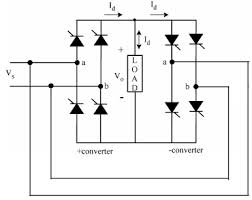

The word cycloconverter has been derived from cycle (time-period hence frequency) conversion. It is also known as AC-AC converter. A cycloconverter is a device which receives a fixed frequency power and converts this for a load with a different or variable frequency without any intermediate d.c conversions. The cycloconverters are most commonly used for obtaining low frequency a.c voltage.

A cycloconverter may be considered to be composed of two groups of converters connected back to back. One group is called positive converter group and the other is called negative converter group. Each converter group has the unidirectional current carrying property, so positive converter group will carry the load current for its positive half cycle and negative converter group will carry negative half cycle of the load current.
From basic theory of six pulse converters, we know that DC output voltage is a function of firing angle α . Edc = 1.35 Erms cosα. Firing angle can be varied from 0° to 180°. If Erms is constant, then output voltage Edc will vary following a cosine curve. In cycloconverter there are two controlling parameters –
- Frequency – of the ac output can be varies by varying the rate of variation of firing angle.
- Voltage – can be varied by varying input voltage to the cycloconverter.
There are two types of cycloconverters : 1-ph to 1-ph cycloconverters and 3-ph to 1-ph cycloconverter.
 by
by